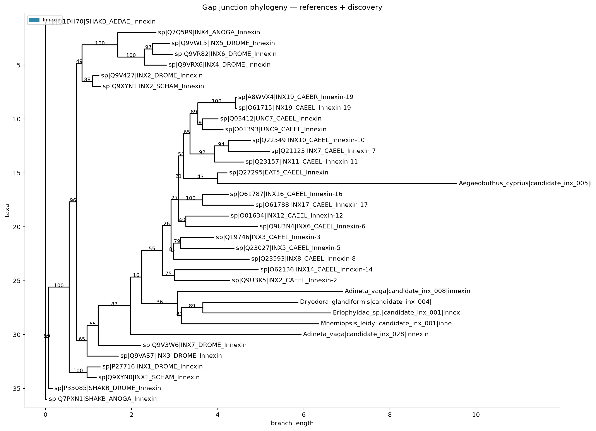
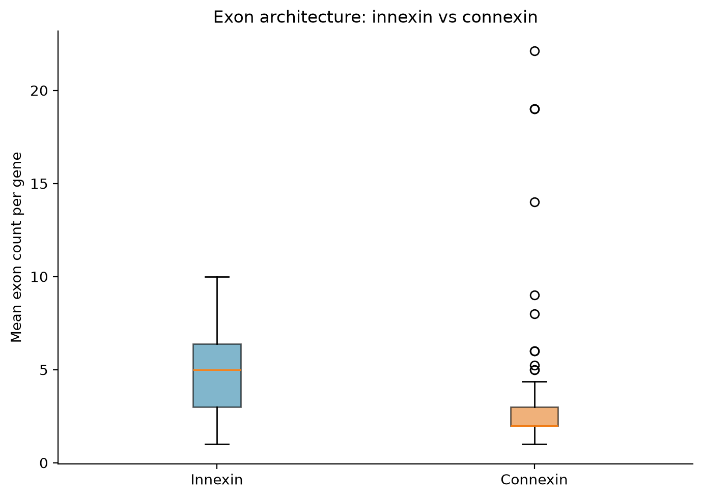
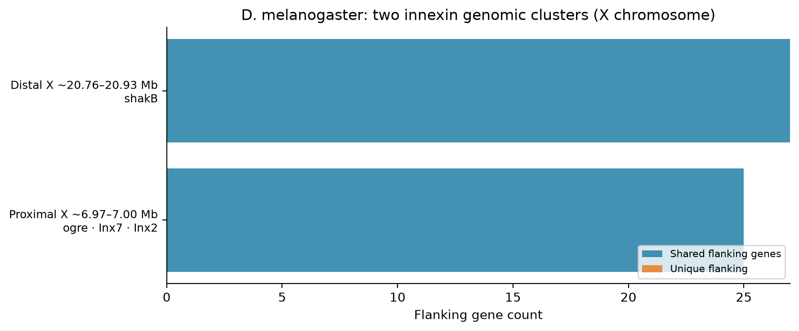
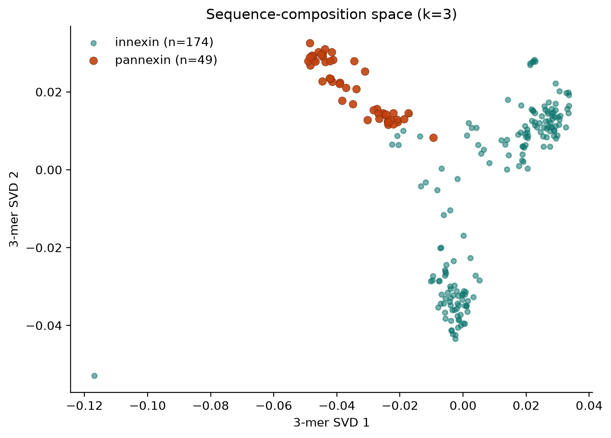
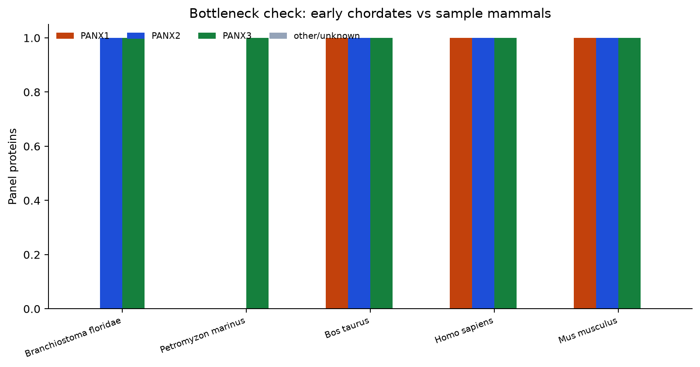

Literature: gap-junction channels are often described as two largely independent protein
families (innexin-lineage vs connexin), with an early chordate innexin bottleneck in lancelets
(one glycosylated innexin, no connexins; Welzel & Schuster 2022) preceding connexin diversification
and a retained glycosylated branch (pannexins).
This panel: innexins diversify mainly by local tandem duplication with little conserved
microsynteny across phyla; connexins diversify within stable vertebrate gene neighbourhoods.
Pannexins are treated as the third chapter of the same story — not a side gallery.
Together: parallel gap-junction solutions (inx vs cnx), plus a homologous chordate remnant
(panx) that no longer docks. The dated bottleneck timeline is literature framing; the
panx×inx MMseqs contrast and PANX1–3 copy counts are from this panel.
Pannexin in this story:
UniProt panel of 49 proteins / 17 species;
~90% hit ≥1 innexin at the same MMseqs thresholds where innexin×connexin finds
0 hits; early-chordate copy numbers are low (lamprey 1; Branchiostoma 2; Ciona 0 in panel).
Full pages:
path ·
× innexin ·
clade × type ·
phylogeny.
From the innexin tree:
four subfamilies — SF1 shakB;
SF2 ogre/Inx1;
SF3 Inx3 + Inx7 + all nematode innexins;
SF4 Inx2 + zpg/Inx4–6.
Gene names are historical labels, not orthology.
Details: innexin_subfamilies/.
Discovery update:
Genome-direct curator re-probe: 3 true rescues
(prior discovery accepted=0; Rotaria, B. manjavacas, Abra;
≥28 loci, floor). Separately, many not_run genomes
get first-pass curator hits — those are not rescues. Overall present floors:
21 species, ≥250 loci. Counts near the query-pack
size can track queries; region locate can exceed the pack.
Figure 1 · Phylogeny
Two families, not one tree
This panel tree is an innexin reference + discovery phylogeny (no connexin tips).
Literature contrasts invertebrate innexins with vertebrate connexins as non-orthologous
gap-junction channels, with an early chordate bottleneck (glycosylated innexin remnants → pannexins)
plus later connexins.
This figure is the invertebrate half only; it does not demonstrate that evolutionary bridge —
that is what figures 5–7 add from the pannexin workspace.

Note: Start with the innexin tree as the invertebrate half. Pannexins are the literature’s retained, non-docking chordate innexin branch; connexin neighbourhoods close the vertebrate half.
Figure 2 · Gene architecture
Different gene structures follow the split
Gene models diverge with the families: connexin coding regions usually lack introns (compact ORFs; panel median ~2 exons including 5′ UTR), while innexins keep coding-region introns (median ~5 exons) and can splice multiple isoforms from one locus.
Flat 1-exon medians in some non-insect innexin clades are mostly TSA/ab initio artifacts; δ GJD “~22 exon” spikes are GFF fusions with intron-rich flanks.

Note: After the phylogenetic split, intron/exon logic also diverged — compact connexin ORFs versus intron-rich innexin loci. Orthology still cannot be read from exon count alone within innexins.
Figure 3 · Innexin development
Two genomic clusters — four tree subfamilies
Genomically, Drosophila shows two X clusters
(ogre · Inx7 · Inx2 at ~6.97 Mb; shakB at ~20.76 Mb), plus Inx3 on 3R.
The phylogeny cuts across those intervals: Inx7 and Inx3 join the nematode radiation (SF3),
while ogre (SF2), Inx2/4–6 (SF4), and shakB (SF1) are separate insect subfamilies.
Shared flanks within a cluster still support local tandem duplication; shared gene families
between clusters would hint at older segmental / WGD-like copying.

Note: Present two intervals with gene names, then overlay the
tree hypothesis. Named panels:
two clusters ·
subfamilies.
Figure 4 · Cross-phylum limit
Tree-guided comparison: SF3 vs nematodes
Compare Dmel Inx3 / Inx7 to nematode innexins as a group.
Drosophila Inx2 and C. elegans inx-2 share a numerical suffix from screens but are
not orthologs — nematode inx-2 sits in SF3 with Inx3/Inx7 (and unc-7/unc-9), while insect Inx2 is SF4.
If neighbourhoods still fail to match under the SF3 pairing, that supports clade-bound architecture.

Note: Prefer the tree over the gene names.
SF3 gene-order panel:
SF3 vs nematodes.
Figure 5 · Pannexin bridge
The third family is the retained innexin branch
Literature: after the early chordate innexin collapse, a glycosylated remnant
(extracellular N-X-S/T) no longer docks into gap junctions — today’s pannexins — while connexins
later supply vertebrate cell–cell coupling.
This panel: we treat pannexins as homologous to innexins (not to connexins) and
build a vertebrate/chordate UniProt panel (PANX1–3) for the checks that follow.
Genome-wide recovery for weakly annotated chordates is outside the present scope.


Note: Same fold family as innexins; docking blocked by N-glycans on extracellular loops.
Guided notes: pannexin path.
Figure 6 · Homology check
Pannexin × innexin — the opposite of innexin × connexin
Same MMseqs thresholds as the direct innexin×connexin contrast (e≤1e-3, alignment ≥80 aa).
This panel: ~90% of curated pannexins hit ≥1 innexin (median ~28% identity; 1062 hits).
On the parent site, innexin×connexin returns essentially zero cross-family hits
at those cutoffs. Sequence space also overlaps in a simple 3-mer embedding — expected if
pannexins are innexin-related, not a third unrelated GJ family.


Note: Homology to innexins is detectable; homology to connexins is not (at these thresholds).
Full contrast: panx × inx ·
parent: inx × cnx.
Figure 7 · Paralogs & bottleneck
PANX1–3 in jawed vertebrates; few copies early
Literature: vertebrate genome duplications yield PANX1, PANX2, PANX3; teleosts can keep extras.
Lancelets / early chordates are the copy-number bottleneck in the published story.
This panel: most mammals / birds / reptiles / amphibians / coelacanth carry a named
PANX1–3 triplet; lamprey has 1 panel protein; Branchiostoma has 2 (weak LOC labels);
Ciona has 0 pannexins in the UniProt panel (innexin outgroups only). Types are UniProt labels —
confirm weak chordate names on the phylogeny page.



Note: Copy-number check and IQ-TREE from the curated UniProt panel.
clade × type ·
PANX tree ·
insights.
Figure 8 · Connexin development
Connexins diversify inside conserved neighborhoods
Across vertebrates, GJA4 sits with the same neighbours (GJB3–GJB5, DLGAP3, SMIM12) — the β-connexin cluster,
a tandem array from local unequal crossing-over, while whole-genome duplications also put other paralogs
(notably GJA1) on separate chromosomes. In Xenopus that β-cluster is visible in both allotetraploid
X. laevis (L) and diploid X. tropicalis, while GJA1 occupies a different locus.
In X. laevis the flank kdm1a.L → tmem30b.L → zmpste24.L → smim12.L sits left of gja4.L;
in X. tropicalis that block is inverted and sits to the right of gja4.
Empty flanks around X. laevis gja1.L on the
GJA1 panel are a short scaffold
or assembly gap, not a biological gene island.

Note: Connexin expansion = tandem clusters + WGD-dispersed addresses + local inversions.
Panels: GJA4 ·
GJA1.